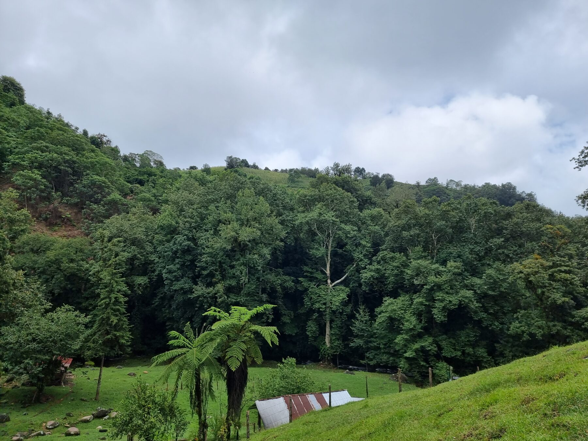
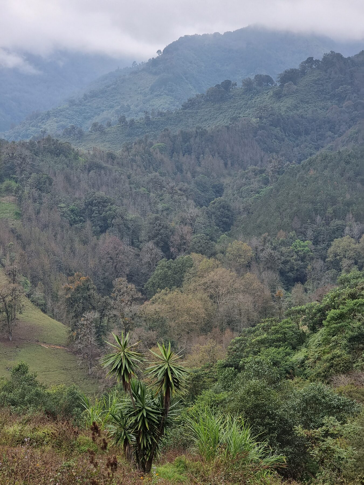
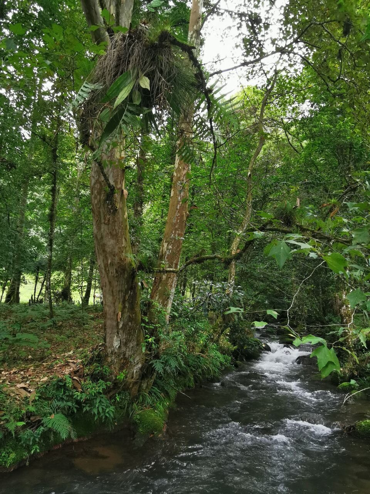
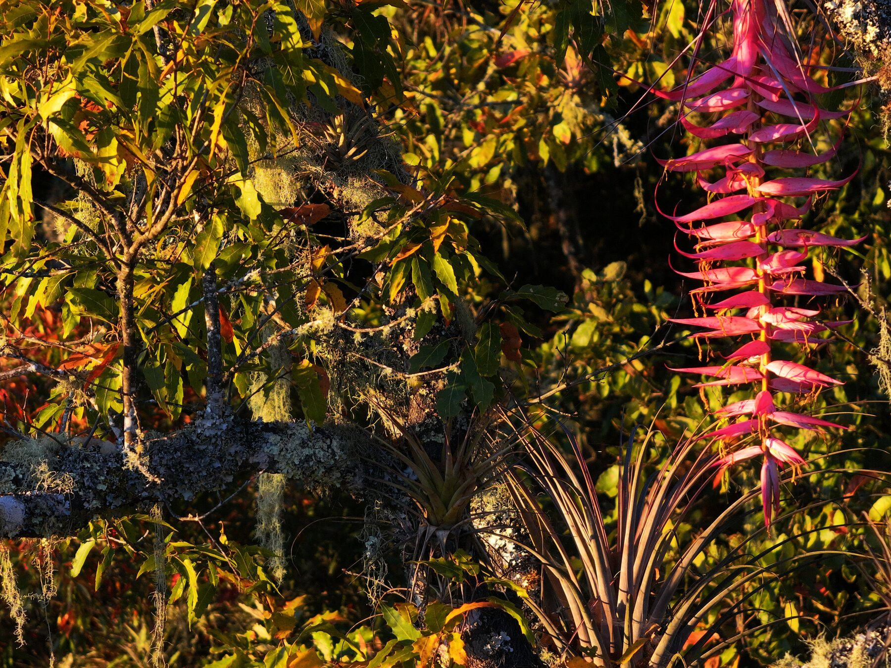
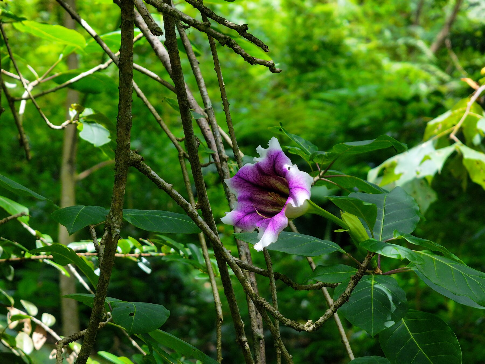
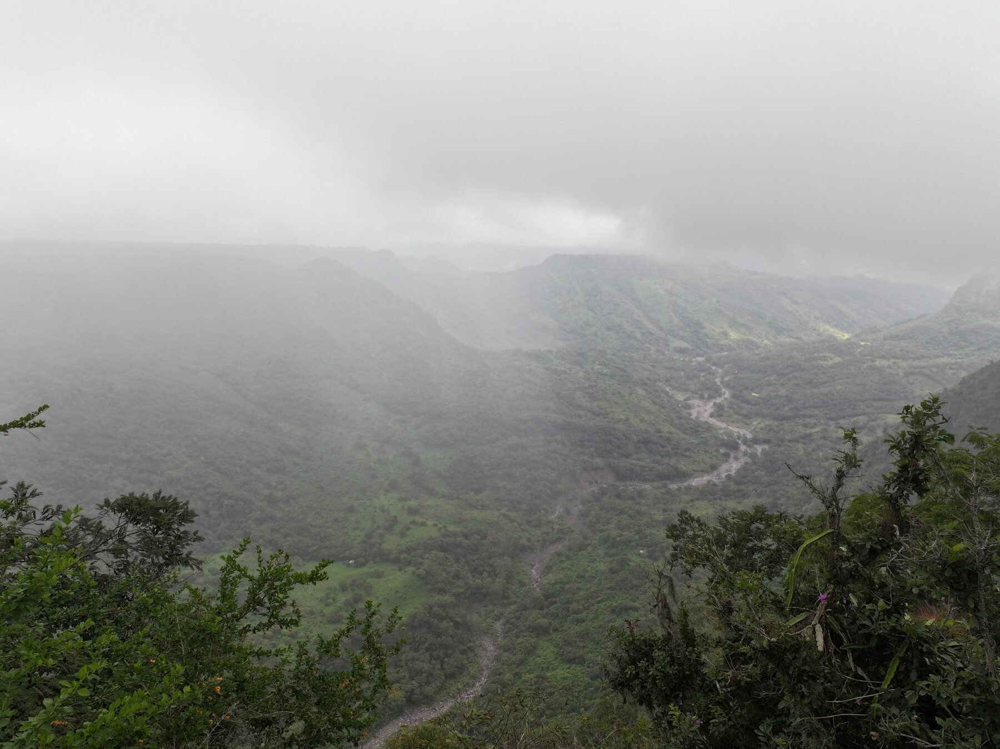

Acineta barkeri
A threatened Mexican cloud-forest orchid monitored in situ at the reserve, with mature individuals in the canopy and future propagation work planned.
The Orchidarc Reserve is a 14-hectare conservation site in central Veracruz, Mexico, protecting cloud-forest and riparian habitat for wild orchids, canopy epiphytes, pollinators and the forest structures that sustain them.

The site combines mature trees, riparian corridors, marginal farmland and cloud-forest fragments that still hold naturally occurring orchid populations.
Orchidarc began from a simple observation: many of Mexico's most culturally familiar orchids are poorly monitored in the places where people actually encounter them.
The reserve is designed as a field base where conservation can remain close to the living plants. It supports repeated observation, photographic records, seed collection planning, propagation work and future reintroduction trials for threatened cloud-forest orchids.
Rather than treating the reserve as scenery, Orchidarc treats it as research infrastructure: a living archive where orchids can be documented across seasons, host trees, microhabitats and disturbance gradients.

The reserve holds common, threatened and locally important orchids, including species used for long-term conservation and propagation planning.
A threatened Mexican cloud-forest orchid monitored in situ at the reserve, with mature individuals in the canopy and future propagation work planned.
A protected epiphyte with strong reserve relevance, used as one of the anchor species for shadehouse and reintroduction planning.
Cloud-forest orchids dependent on host trees, humidity, airflow and intact canopy structure across the Veracruz landscape.
Orchid conservation at the reserve is not only about individual plants. It depends on the living architecture of the forest.




The reserve gives Orchidarc a place where field observation, propagation, documentary work and community-facing conservation can be repeated year after year. The next phase is to link the living site with a circa-situ shadehouse for threatened orchids propagated from documented local material.